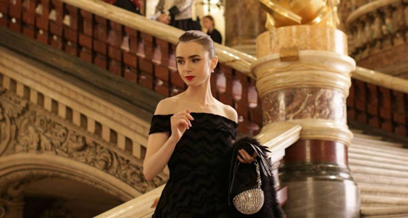
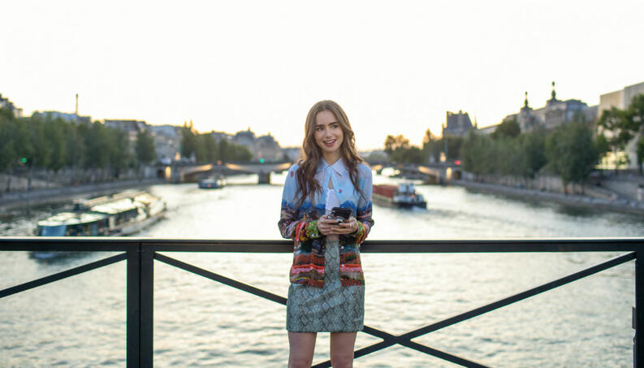
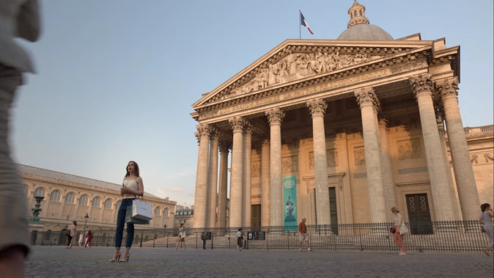
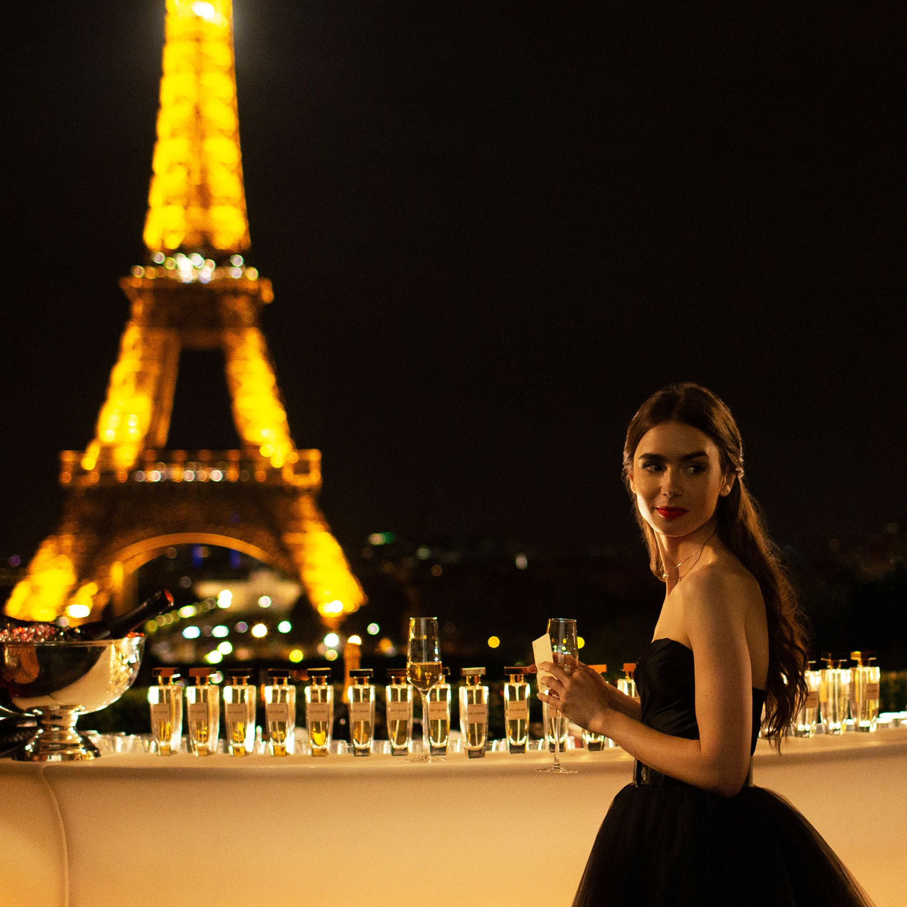

-

Opera Garnier
A Opera Garnier foi construída durante a grande reforma da capital francesa orquestrada por Napoleão III
e o Barão Haussmann no século XIX.
O Palais Garnier é “provavelmente a ópera mais famosa do mundo, um símbolo de Paris assim como a
Catedral de Notre Dame, o Louvre e a basílica do Sacré-Coeur” (Hanser). Ele ficou famoso com o romance O
Fantasma da Ópera de Gaston Leroux em 1911 e, em seguida, com a sua comédia musical em 1986.
Localização: Rue Scribe com rue Auber
Funcionamento: Todos os dias, das 10:00 às 17:00
Preço:Adultos: €12 (R$79,50); -25 anos e estudantes: €8 (R$53); -12 anos: gratuita.  Rio Sena No coração da França, você encontra um rio de quase 800km que vai até o Oceano Atlântico, terminando no famoso Canal da Mancha. O Rio Sena é tão grande que conta com 37 pontes passando por cima dele. Além disso, vale a pena ressaltar que ele pertence oficialmente à capital francesa desde 1864 e é considerado um dos maiores pontos turísticos de Paris.
As primeiras visitas de Paris pelo Rio Sena aconteceram quando da Exposição Universal de 1867. Nessa época, 2,5 milhões de passageiros foram transportados pela companhia Bateaux-Omnibus. Localização: Paris
Funcionamento: Livre
Preço: Adultos: 13,50 €; -12 anos: 6 €; -4 anos: gratuita -

Panthéon
Contruído entre 1764 e 1790, o Panteão de Paris foi o primeiro lugar de onde se podia ver Paris
do alto. Está localizado no Quartier Latin e muito perto dos Jardins de Luxemburgo.
Sob a Terceira República e coincidindo com o funeral de Victor Hugo, o Panteão se converteu
em um edifício destinado a abrigar os corpos dos homens ilustres.
Localização: Piazza della Rotonda
Funcionamento: Segunda à sábado: 08:30 às 18:30 e aos domingos: 19:00 às 17:00
Preço: Gratuita  Torre Eiffel A Torre Eiffel é uma grande torre que está localizada no Campo de Marte (Champ de Mars), em Paris, França. A Torre Eiffel foi construída para o evento “Exibição Universal” (Exposition Universelle) que ocorreu em 1889 em Paris. O evento foi realizado no centenário da Revolução Francesa (1789). Curioso notar que a ideia inicial era ser desmontada após o final do evento. Entretanto, ela permanece até hoje no local. Localização: Campo de Marte
Funcionamento: 09:00 às 23:45
Preço: Adultos: a partir de €10,20 (R$68,70); Jovens: a partir de €5,10 (R$34,30); Crianças: a partir de €2,50 (R$16,90); -4 anos: gratuita.